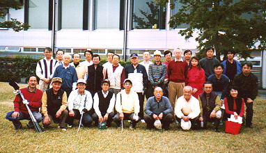

第15回コンペ(H13.10.28) おおむらさきGC 東京玉翠会ゴルフ同好会は、昨年(H13)10月28日に第15回、本年(H14)5月26日に第16回目のコンペを開催しております。
今回はコンペ幹事を務めました５３年卒有志によるコンペ結果の報告をもって、ゴルフ同好会の活動報告とさせていただきます。
第15回コンペは、平成13年10月28日に、埼玉県「おおむらさきＧＣ」にて、28名の参加で7組にて開催されました。
優勝者は32年卒の森田健一先輩でした。
女性優勝者は女性の参加が2名のみだったため設定できませんでした。
優勝された森田先輩もグロス81の好成績でしたが、ベストグロスは38年卒沼田敬純先輩、52年卒折目尚也先輩がともに79という、我々アベレージゴルファーにとって憧れの70台を記録されています。
また、最年長参加者は19年卒の藤本弘先輩、最年少参加者は63年卒の乙川みち子さんでした。
第16回コンペは、平成14年5月26日、千葉県の「カントリークラブザ・ファースト」にて、同じく28名参加、8組で行われました。
前回参加されなかった打越祐会長と、しばらくお体みされていた中村文俊先輩が参加され年長組の貫禄を披露されました。
最年少は我々53年組で、あろうことか、プービーとプービーメーカーを５３年で独占する、逆ワンツーフィニッシユを成し遂げてしまいました。
優勝は51年卒の辻敬三先輩、女性のトップは43年卒小島豊子先輩でした。
残念ながら今回も女性の参加が3名にとどまってしまいました。
また、ベストグロスは43年卒の松島孝信先輩でしたが、33年卒垣見昌美先輩、38年卒沼田敬純先輩との80台での攻防もハイレベルで見応えのあるものでした。
15回、16回ともに、参加者が28名と以前に比べて少なくなってしまったことは幹事としましても残念でありますが、今後は常連の諸先輩の参加はもちろん、若い方々の新規参加を期待しつつ、20回、30回と末永くこのコンペが続くことを祈念する次第であります。